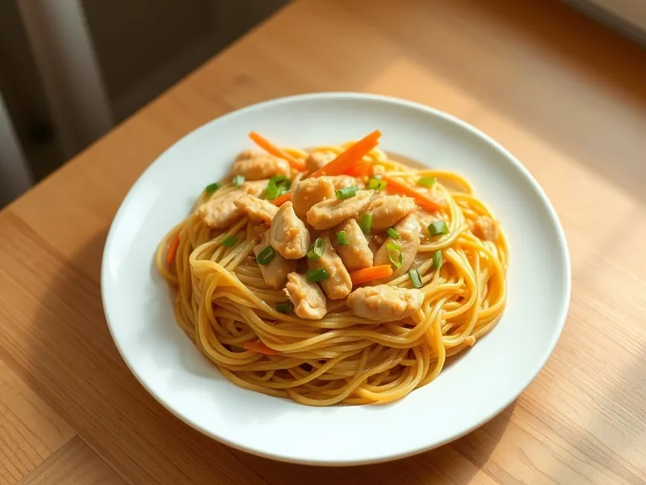

Лапша с курицей в арахисовом соусе
Яичная лапша с курицей и морковью в соусе из арахисовой пасты, сои и мёда
25 мин2 порц.696 ккал на порциюБ 49 · Ж 23 · У 77Азиатская кухня
Открыть в приложении: порции, таймеры, список покупок
Продукты на 2 порц.
- Яичная лапша180 г
- Куриное филе250 г
- Арахисовая паста2 ст. л.
- Соевый соус2 ст. л.
- Мёд2 ч. л.
- Лимон1 ст. л.
- Морковь1 шт
- Чеснок1 зуб.
- Растительное масло1 ст. л.
- Зелёный лук по желаниюпо вкусу
- Вода2000 мл
Как готовить
- Сварите лапшу в кипящей воде по инструкции на упаковке, обычно 3-4 минуты. Отлейте 60 мл воды, лапшу откиньте.
- Смешайте арахисовую пасту, соевый соус, мёд, лимонный сок, тёртый чеснок и отлитую воду до гладкого соуса.
- Курицу нарежьте полосками, морковь тонкой соломкой. Обжарьте курицу на масле на сильном огне 5 минут до золотистого цвета, добавьте морковь на 2 минуты.
- Убавьте огонь до слабого, влейте соус и положите лапшу, перемешайте 1-2 минуты, пока соус не покроет лапшу.
- Посыпьте зелёным луком и подавайте горячей или тёплой.
Совет. Арахисовый соус быстро густеет при остывании, разбавляйте его горячей водой по ложке. Для остроты добавьте щепотку чили.